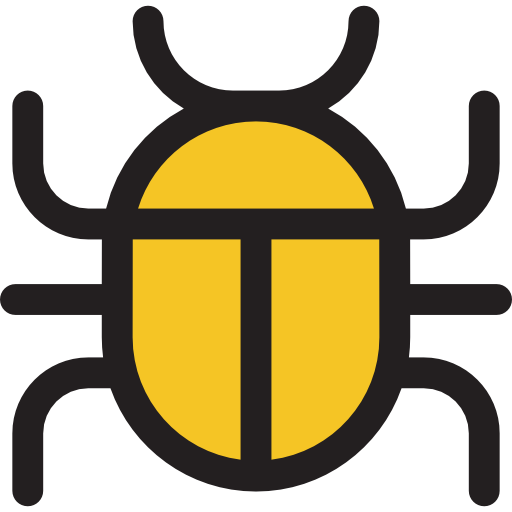
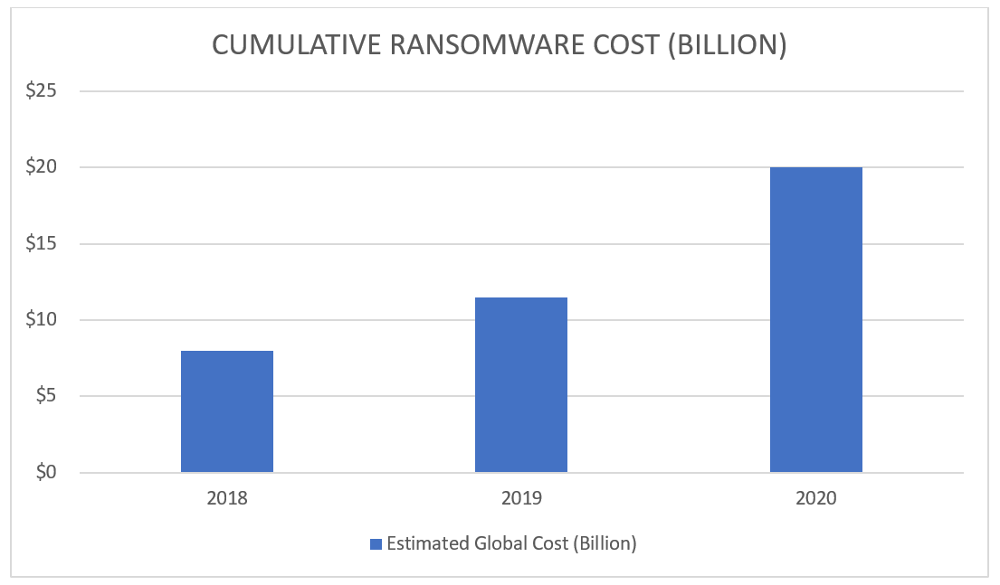
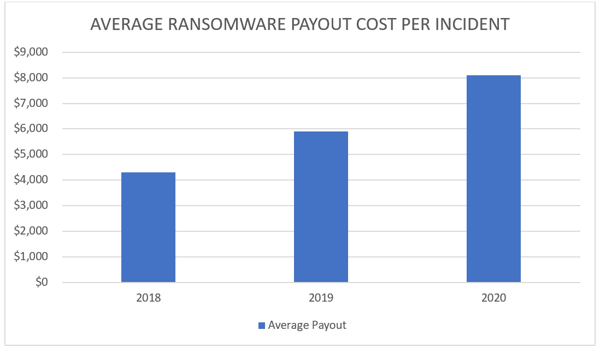

What is Malware?
Definition of Malware
Malware, short for "malicious software," refers to any type of software or program that is specifically designed to cause harm or damage to computer systems, networks, or devices
The goal of malware is to steal information or resources for monetary gain through ransomware, or even just for sabotage
Impact of Malware
 Malware can have a significant impact on individuals, businesses, and governments. It can be used to steal sensitive information, disrupt critical systems, and cause financial losses.
For individuals, malware can result in the loss of personal information, including banking information, login credentials, and other sensitive data. This can lead to identity theft, financial losses, and damage to one's reputation. In some cases, malware can also take control of a user's device, turning it into a bot that can be used for malicious purposes.
For businesses, malware can result in significant financial losses due to downtime, lost productivity, and the cost of mitigating the attack. Malware can also compromise sensitive business information, including customer data, trade secrets, and financial information. This can result in damage to the business's reputation and loss of customer trust.
For governments, malware can be used to steal classified information, disrupt critical systems, and cause damage to infrastructure. This can compromise national security and put citizens at risk. Malware attacks on government systems can also lead to a loss of trust in government institutions and public officials.